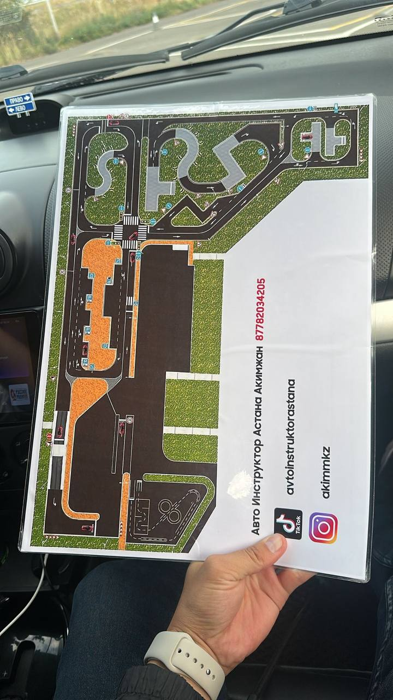

[Текст о расписании и организации занятий, 150–250 слов]
Мы считаем, что регулярность важнее интенсивности — короткие частые занятия усваиваются лучше, чем редкие долгие. Именно поэтому расписание построено по неделям, а не по отдельным датам.
Важно: расписание может измениться из-за загруженности инструкторов, поэтому уточняйте актуальное время перед записью.
Теория по неделям
Неделя 1
Основы ПДД
Дорожные знаки
Неделя 2
Разметка и сигналы регулировщика
Требования ГИБДД
Практические занятия
Расписание практических занятий
Практика на автодроме

Разбор маршрута перед городским вождениемВождение в городе
«Очень хорошо распределены занятия, выставлено в удобное для всех время. А если по каким то причинам не получается прийти на занятие, то можно выбрать другое время»
— Асылбек, выпускник курса, из личной беседы, 10.09.2026
Как отметил один из выпускников, Расписание оказалось удобнее, чем я ожидал.
Место проведения теории — учебный класс, адрес уточняется по почте или по телефону.
Количество мест в группе ограничено «12 человек».